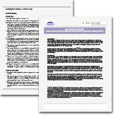
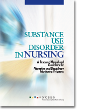

Practice
To support our vision of leading in nursing regulation, NCSBN produces innovative materials and initiatives to support boards of nursing (BON) in their roles of regulating nursing practice. We address practice topics with the intent to provide evidence-based resources to guide regulatory decisions. NCSBN staff also collaborates with professional nursing organizations and participates in national nursing practice meetings and initiatives.
NCSBN offers a series of webinars covering a range of topics related to practice and regulation. Experts from the nursing practice community and from regulation collaborate with NCSBN in developing and presenting the information to member board participants.
Papers & Research Projects
APRNs in the U.S.
Advanced practice registered nurses (APRNs) are registered nurses educated at Masters or post Masters level and in a specific role and patient population. APRNs are prepared by education and certification to assess, diagnose, manage patient problems, order tests, and prescribe medications. NCSBN supports an initiative to assist states in aligning their APRN regulation with the major elements of the Consensus Model for APRN Regulation. The Consensus Model provides guidance for states to adopt uniformity in the regulation of APRN roles.
Delegation
Nurses at all levels frequently question, “What tasks can I delegate to other members of my health care team?” NCSBN has developed position papers on delegation and working with others.
Social Media in Nursing Practice
The use of social media has grown exponentially, bringing questions about its proper use in health care and nursing practice. NCSBN has developed standardized guidelines for nurses and employers on responsible use of social media.
Substance Use Disorder in Nursing
An extensive body of scientific evidence shows that approaching substance use disorders as treatable illnesses is extremely effective for the individual using substances, as well as for society. The Substance Use Disorder in Nursing Resource Manual and Guidelines provides practical and evidence-based guidelines for evaluating, treating and managing nurses with a substance use disorder.
Educational Webinar Series
Medication Reconciliation
March 19, 2013
Medication Reconciliation PresentationJoint Commission Facts about National Patienty Safety
Off-Label Drug Use
January 10, 2013
PresentationFDA Drug Resources
A Review of the Components and Best Practices in Using Electronic Health Records
November 27, 2012
Watch webinarNurse Triage Lines: Improving Access, Informing the Public
September 20, 2012
Nurse Triage Lines PresentationNurse Triage Lines Resources
The First National Survey of Medication Aides
May 24, 2012
Medication Aides Presentation
The First National Survey of Medication Aides Research Brief
NCSBN Social Media Guidelines and Resources
March 1, 2012
Social Media Presentation
A Nurse Guide to the Use of Social Media